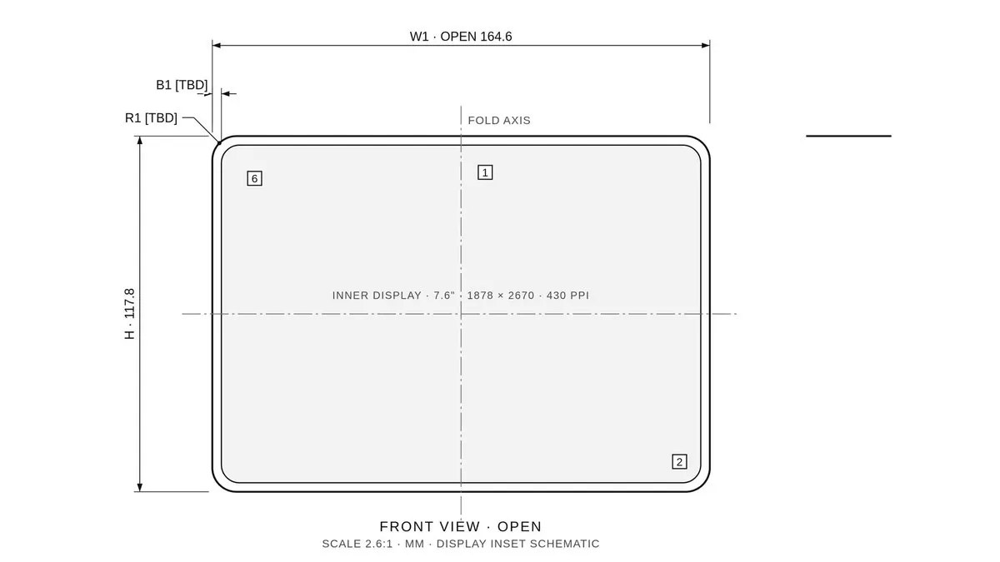
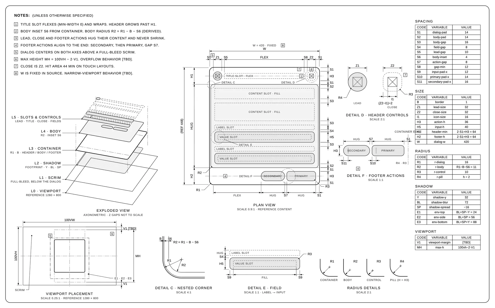
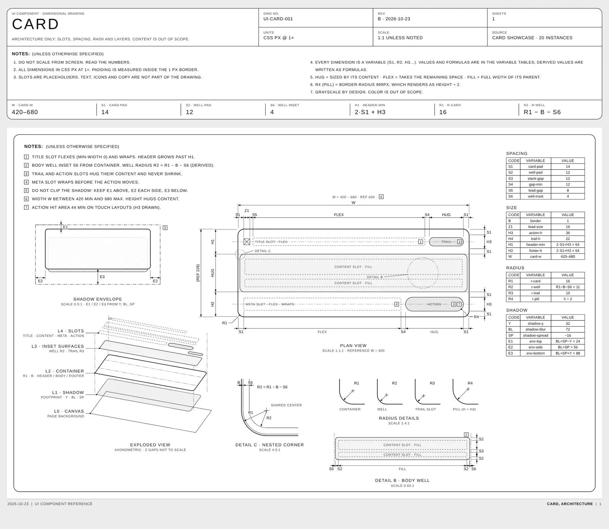
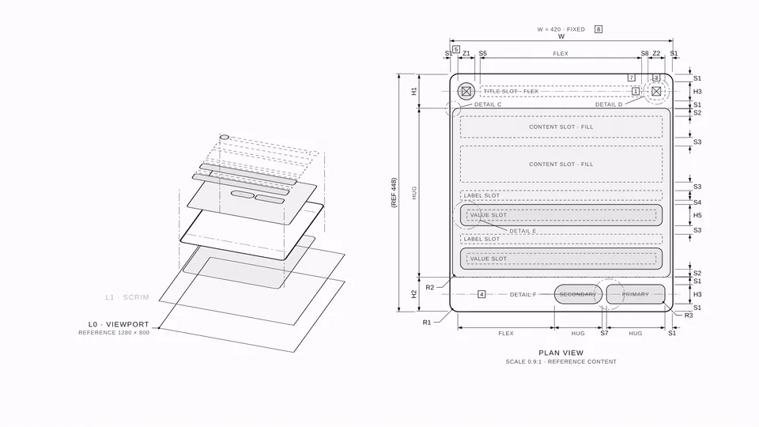

推荐帖照录
劳伦斯的原帖为中文，以下逐字照录（视频与引用帖链接改为文字说明）：
🔥发现一个挺有意思的 GitHub 项目：dimensional-drawing。它是一个 Skill，能让 Agent 画出那种线条简单、又很有质感的规格介绍图，做成动画也很好看。
刚好第一台折叠 iPhone 出来了，我就拿 iPhone Duo 画了一张示意图，做了个视频，效果如下📐 〔视频，13 秒〕 〔引用帖：x.com/lawrencew_zen/status/2114599363171299646〕
同一会话下作者没有补充回复；帖子里没有贴仓库链接，本页的仓库地址是按项目名找到的（作者 enesozturk，名称与功能都对得上）。帖子引用的是作者自己 10 月 26 日的一篇 X 长文《写 AI 内容的人，最被低估的资料库是邮箱》，讲用网易邮箱大师的 Mail Agent 把英文 newsletter 整理成选题表，和本项目无关，见下文「注意事项」。
项目是什么
Apple 给每台设备都公开一套尺寸图，方便配件厂商做出严丝合缝的保护壳。README 形容这种图“安静、密集、好看：一张纸，几个视图，几个小小的细节圈，到处是数字”。这个仓库就是教 Agent 用同样的方式去画你自己的组件：一张卡片、一个对话框，画成一张规格单，交给任何人都能照着复原它的结构。文案内容故意不画，这样文字改了，图依然成立。
仓库里有两个 Skill：
dimensional-drawing：画图。输出一个自包含的 HTML 文件（在 claude.ai 上就发布成 Artifact）。附两份完整样例：卡片card-sheet.html和对话框dialog-sheet.html。dimensional-drawing-motion：把画好的图纸做成约 10 秒的短片。主要目标是 Claude 的 Motion 制品，另有一个不依赖 Claude 的无头渲染器（Playwright 逐帧截图 + ffmpeg 编码）。

assets/dialog-sheet.png，MIT 许可，本站转为 webp。五条规矩
SKILL.md 给画图定了五条硬规矩，这也是它的图看起来“克制”的原因：
| 规矩 | 具体做法 |
|---|---|
| 只用黑白灰 | 白纸黑线，不许有任何强调色。靠线宽、虚线样式、剖面线和浅灰填充来区分元素。 |
| 画结构，不画内容 | UI 只画“插槽”：TITLE SLOT · FLEX、ACTION · HUG、CONTENT SLOT · FILL。不标文字宽度。HUG = 随内容，FLEX = 占剩余空间，FILL = 撑满父级。 |
| 用变量，不写死数字 | 图上每个尺寸都是编号（S 间距、H 高度、R 圆角、E 阴影包络……），表格给出编号、变量名和数值；推导值写公式和结果，例如 H1 header-min = 2·S1 + H3 = 64、R2 r-inner = R1 − B − S6 = 11。 |
| 不带品牌 | 图上、标题栏、页脚都不出现产品名或商标，除非用户要求；用中性名字，比如 UI-CARD-001。 |
| 不编数值 | 源里没有的值一律写 [TBD]，按比例画示意。 |
它怎么量、怎么画
- 量尺寸：读真实源码（仓库文件、Storybook、设计稿、网址），用 Playwright 渲染、等字体加载完，再遍历盒模型（
getBoundingClientRect+getComputedStyle：padding、gap、圆角、边框、最小高度……）；还要用 grep 统计同类组件的所有用例，让变量反映的是整套设计系统，而不是某一个例子。 - 版面：顶部是 HTML 标题栏（图号、版本、单位、比例、来源 + 通用注记 + 一排关键变量）；下面尽量只用一张 SVG 图纸：左上注记，中间平面图，左下分层爆炸轴测图，底部是嵌套圆角、各个圆角的细节视图，右栏是变量表。
- 画图工具包：SKILL.md 给了一组 SVG 小函数（水平/垂直尺寸线、引线标注、圆角标注、注记编号框、细节圈、变量表），并规定了线宽、箭头、字号等细节。
- 实物也能画：第三角投影的顶/前/右视图加剖面 A–A，单位毫米，只用公开发布的规格，列出来源，来源冲突标
CONFLICT，其余一律[TBD]。README 的建议是“试试画一个保温杯”。 - 交付前自检：图上每个编号都要在表里出现、每个公式都要闭合；不得有品牌文字和颜色（grep 灰度以外的色值）；按 1800 px 宽用 Playwright 渲染一次，看截图有没有标签重叠或越出图框，修一遍再交。

assets/card-sheet.png，MIT 许可。让图动起来
动效 Skill 把一张画好的图拍成“笔在画、镜头在动”的短片。参考片 11 秒，1920×1080、60 fps，分五拍：
- 0–2.3 秒：镜头贴近标题栏（约 4.4 倍），外框从左上角画起，接着是图标、标题插槽、分隔线和头部尺寸。
- 2.3–4.2 秒：拉远到平面图（约 1.7 倍），一边拉一边把剩下的部分画完。
- 4.2–7.2 秒：图层从平面“抬起”变成爆炸轴测图。先描边、后填充，否则白色填充会在线稿上闪一下。
- 7.2–9.2 秒：拉回整张图纸，注记、表格和细节视图依次画出。
- 9.2 秒以后：极慢的推镜，让最后一帧不死板。
关键设计是整个场景是时间的纯函数：render(t) 只根据 t 设定所有属性，不依赖上一帧，所以无头渲染器可以跳到任意一帧截图。缓动只用 ease-in-out / ease-out，不弹跳、不过冲、不加颜色，默认不加音乐和人声。

assets/dialog-motion.gif 中的一帧（图层抬起阶段）。GIF 来自仓库，MIT 许可；本站只截取一帧，完整影片请看仓库。安装与使用
Claude Code：
git clone https://github.com/enesozturk/dimensional-drawing cp -r dimensional-drawing/skills/* ~/.claude/skills/
其他 Agent（Codex、Cursor、Gemini CLI 等）：
npx skills add enesozturk/dimensional-drawing
然后直接说，例如：“给 src/components/Card.tsx 里的 Card 组件画一张尺寸图”“按样例的风格画出我们设置对话框的结构”。要做成短片就说“把这张图动起来”；不用 Claude 的话，到 skills/dimensional-drawing-motion/adapters/headless 下 npm install，再运行 node render.mjs --scene … --css … --out film.mp4（需要 Node 18+ 和 ffmpeg）。
劳伦斯的 iPhone Duo 示意图
推荐帖里的视频是用这套 Skill 画的 iPhone Duo（Apple 第一款折叠 iPhone，2026 年 9 月发布、10 月 23 日首发）。这正好是 SKILL.md 里“实物”那一路：毫米单位、只用公开规格、查不到的写 [TBD]。本站把封面帧上能看到的数字和 Apple 官方技术规格对了一遍：
| 图上标注 | Apple 官方规格（2026-10-30 核对） |
|---|---|
| W1 · OPEN 164.6 | ✅ 展开宽度 164.6 mm |
| H · 117.8 | ✅ 高度 117.8 mm |
| INNER DISPLAY · 7.6" · 1878 × 2670 · 430 PPI | ✅ 内屏 7.6 英寸，1878×2670，430 ppi |
| B1 [TBD]、R1 [TBD] | 官方没有公布边框宽度和外圆角，图上如实留空，符合“不编数值”的规矩。 |
⚠️ 本站只看到了视频封面帧；视频其余部分（是否画了合起状态、侧视图等）没有逐帧核对。作者用的是哪个 Agent、是否走 Claude Motion 出片，帖子里没说。
核对与注意事项
- 项目状态：仓库 2026-10-23 创建，到 2026-10-30 19:17 UTC+8 约 1,594 星、107 个 fork（GitHub 仓库页）。MIT 许可 ✅（
LICENSE：© 2026 Enes Ozturk）。仓库只有 Markdown、HTML 样例和两个 JS 文件，没有可执行的安装钩子或 MCP 配置。 - ⚠️ 本站没有实际运行这两个 Skill，也没有用无头渲染器出片；“在 Claude Motion 制品里导出 MP4”是 README 的说法，未核实。README 自己也说明：除 Playwright + ffmpeg 外，Remotion、Motion Canvas、GSAP、Lottie 等动画库都没测过。动效 SKILL.md 还提醒，移植到其他库前先看许可证（例如 Remotion 超过 3 人的公司需要商业许可）。
- ⚠️ 量 UI 依赖 Playwright 渲染：只给截图时，它拿不到 padding、圆角等真实数值，结果更接近“目测 + [TBD]”，精度取决于源（⚠️ 推断）。
- 风格是单一浅色：SKILL.md 规定
color-scheme: light，产出的图不带深色模式。 - 灵感来源：README 鸣谢 Apple 的配件尺寸图和设计师 Andreas Storm（“是他的帖子开了这个头”）。
- 利益相关：推荐帖没有 utm、返利或合作标注，项目本身也没有付费版。⚠️ 推荐帖引用的是作者自己 10 月 26 日的长文，内容是网易邮箱大师 Mail Agent 的上手教程（带积分、模型选择等产品细节），和本项目无关；那篇是否为商业合作，帖内没有标注，本站无法判断（⚠️ 未核实）。引用它在这里大概是作者在带自己的旧帖（⚠️ 推断）。
站内相关
- Anatomy：另一个“把东西拆开讲清楚”的 Claude Code Skill，做的是能按步运行的机器解释图。
- MotionSites Web Builder：做电影感落地页的 Skill，同样把审美规则写进 SKILL.md。
- Huashu-motion：用代码直出产品宣传片，和这里“纯函数 render(t) + 逐帧截图”的出片思路相近。
- Opus 5.5 动效实验室：让 Claude 像工作室一样做动画的另一组实验。
附录一：README 全文中译
以下是仓库 README（提交 5c45743）的全文中译，依 MIT 许可转载。页首动图与样例图已在上文以 webp 呈现，这里改写为文字说明。
展开 / 收起 README 中译
〔页首动图：一个对话框组件的尺寸图自己画出来——先特写头部，再拉远到平面图，图层抬起成爆炸视图，最后是整张图纸。〕
dimensional-drawing ✏️📐
给它一个 UI 组件，还你一张单页技术图。
边距、间距、圆角、图层和视口位置，像 Apple 的尺寸图一样测量并标注。
安装 · 使用 · 让它动起来 · 样例
Apple 为每一台设备发布尺寸图，好让配件厂商做出合身的保护壳。这些图安静、密集、好看：一张纸，几个视图，几个小小的细节圈，到处是数字。
这个仓库教你的 Agent 用同样的方式画你的组件。一张卡片或一个对话框会变成一张规格单，交给任何人都能照着复原它的结构：边距、间距、圆角、图层、它在视口里的位置。文案和内容故意不画，这样文字变了，图依然成立。
里面有什么 🎁
skills/
├── dimensional-drawing/ 画图 Skill
│ ├── SKILL.md
│ └── examples/ 卡片 + 对话框图纸（单个 HTML 文件）
└── dimensional-drawing-motion/ 把图纸变成约 10 秒的短片
├── SKILL.md
├── templates/ 参考场景 + 样式表
└── adapters/
├── claude-motion.md Claude 的 Motion 制品（首选）
└── headless/ Playwright + ffmpeg，无需 Claude
家规
| ⚫️ 单色 | 只用灰度；靠线宽、虚线和剖面线区分 |
| 🧱 画结构，不画内容 | TITLE SLOT · FLEX、ACTION · HUG、CONTENT SLOT · FILL |
| 🔤 变量，不是数字 | S1、R2、H1 = 2·S1 + H3、R2 = R1 − B − S6 |
| 🏷️ 不带品牌 | 用中性名字，例如 UI-CARD-001 |
| 🙅 绝不编造数值 | 未知值保持 [TBD] |
安装
Claude Code
git clone https://github.com/enesozturk/dimensional-drawing cp -r dimensional-drawing/skills/* ~/.claude/skills/
claude.ai / Claude 桌面版：把一个 Skill 文件夹（例如 skills/dimensional-drawing）打成 zip，在 设置 → 能力 → Skills 里添加。
其他任何 Agent（Codex、Cursor、Gemini CLI……）：使用 skills 命令行工具，或者让你的 Agent 去读 SKILL.md 文件。
npx skills add enesozturk/dimensional-drawing
使用
说你要一张图，并指向来源（仓库文件、Storybook story、网址、截图）：
给
src/components/Card.tsx里的Card组件画一张尺寸图
画出我们设置对话框的结构，风格和样例一样
你会得到：顶部一个列出关键变量的标题栏，下面是一整张密集的图纸——注记、平面图、分层爆炸图、细节视图（嵌套圆角、各个圆角、主体），以及变量表。
实物也能画（第三角投影视图、毫米、只用公开规格）。试试画一个保温杯 🫖。
让它动起来 🎬
动效 Skill 把一张画好的图做成动画，就像一支笔在画它、同时一台摄影机在纸面上移动：
- 特写头部，它的线条一条条画出来
- 拉远到平面图，其余部分边拉边画
- 图层从平面图上抬起，变成爆炸视图（先描边、后填充，这样不会闪）
- 拉远到整张图纸，剩下的视图依次画出
场景是时间的纯函数，所以能在两个地方运行：
| 用 Claude | 说一句“把这张图动起来”。Claude 会在 Motion 制品里搭好它，你导出 MP4 即可。这是首选目标，节奏也是在这里调的。 |
| 不用 Claude | cd skills/dimensional-drawing-motion/adapters/headless && npm install，然后 node render.mjs --scene ../../templates/scene-dialog.js --css ../../templates/base.css --out dialog.mp4。需要 Node 18+ 和 ffmpeg。 |
注意：针对 Claude Motion 优化。无头渲染器用 Playwright（Chromium）+ ffmpeg 测试过。其他动画库（Remotion、Motion Canvas、GSAP、Lottie……）没有测试。
样例
对话框：固定宽度、遮罩、视口位置、头部控件、底部操作按钮
〔图：对话框组件的尺寸图〕
卡片：可变宽度、内容区、嵌套圆角、阴影包络
〔图：卡片组件的尺寸图〕
HTML 版本在 skills/dimensional-drawing/examples 里打开。完整影片是 assets/dialog-motion.mp4。
致谢 💌
- Apple 的配件尺寸图，北极星
- Andreas Storm，是他的帖子开了这个头
许可证
MIT © Enes Ozturk。什么都画吧。
附录二：许可证原文
展开 MIT License
MIT License Copyright (c) 2026 Enes Ozturk Permission is hereby granted, free of charge, to any person obtaining a copy of this software and associated documentation files (the "Software"), to deal in the Software without restriction, including without limitation the rights to use, copy, modify, merge, publish, distribute, sublicense, and/or sell copies of the Software, and to permit persons to whom the Software is furnished to do so, subject to the following conditions: The above copyright notice and this permission notice shall be included in all copies or substantial portions of the Software. THE SOFTWARE IS PROVIDED "AS IS", WITHOUT WARRANTY OF ANY KIND, EXPRESS OR IMPLIED, INCLUDING BUT NOT LIMITED TO THE WARRANTIES OF MERCHANTABILITY, FITNESS FOR A PARTICULAR PURPOSE AND NONINFRINGEMENT. IN NO EVENT SHALL THE AUTHORS OR COPYRIGHT HOLDERS BE LIABLE FOR ANY CLAIM, DAMAGES OR OTHER LIABILITY, WHETHER IN AN ACTION OF CONTRACT, TORT OR OTHERWISE, ARISING FROM, OUT OF OR IN CONNECTION WITH THE SOFTWARE OR THE USE OR OTHER DEALINGS IN THE SOFTWARE.